Plot widget¶
This widget is to explore, modify and make plots from data. It appears when users activate matplotlib plot in Files names widget menu.
It uses some important Python packages:
- PANDAS (Python Data Analysis Library) to read and store data in memory.
- MATPLOTLIB (Python 2D plotting library) to plot curves.
Warning
Data are read from CSV formated files. Note that result files of Iradina code use whitespace/tabulation for separator character, not comma, for readability.
{kind=link}
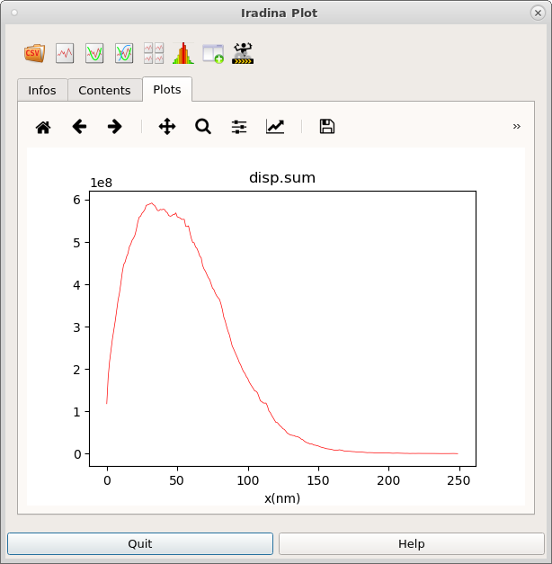
There are four main widgets (from up to down, left to right):
- Plots toolbar widget
- Infos tab widget
- Contents tab widget
- Plots tab widget
Plot toolbar widget¶
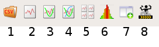
This menu contains some buttons, as actions, which are, from left to right:
- Read a new data set from file, CSV formatted.
- Plot curve y=f(x). 2 columns (x,y) selected.
- Plot 2 curves (y1,y2)=f(x), two distinct Y-axis. 3 columns (x,y1,y2) selected.
- Plot n curves y1,…yn=f(x), one Y-axis, (n+1) columns (x,y1,…yn) selected.
- Plot n distinct curves y1,…yn=f(x), (n+1) columns (x,y1,…yn) selected.
- Plot histogram, one columns selected, (automatic number of intervals).
- Execute PANDAS expressions, modification on the fly of Contents tab widget.
- Initialize data ellipse in Contents tab widget (as a newbie example), plot the ellipse.
With this toolbar, user may process:
- Select one, or more columns in Contents tab widget, then call plot of curve(s) using plot buttons of this plot toolbar. A MATPLOTLIB plot is displayed in Plots tab widget. See Example of user plot.
- Create, remove, calculate new(s) colums of data in Contents tab widget. See Example of user PANDAS expression.
- Filter, sort etc. lines of data in Contents tab widget, that means also get (and trace) a subset of Contents tab widget.
Infos tab widget¶
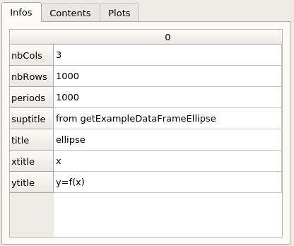
This widget contains some contextual informations from CSV data file, if they are present.
Contents tab widget¶
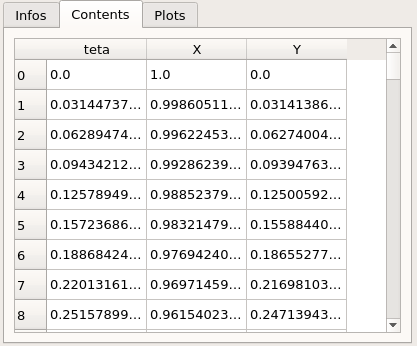
This widget displays current data, allowing some elementary modifications (see your appropriate spreadsheet for more functionalities (Excel, or else).
Plots tab widget¶
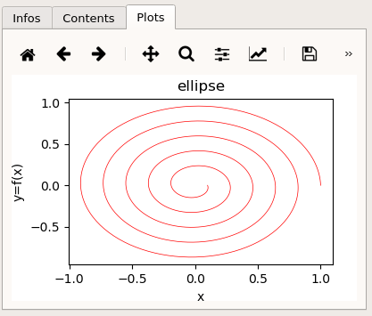
This widget displays current plot, as an instance of matplotlib figure.
Plot widget usage¶
Example of user PANDAS expression¶
User may modify data of Contents tab widget, Clicking on menu actions button Execute PANDAS expressions of Plot toolbar widget.
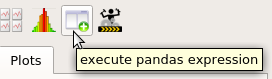
A dialog box appears set your pandas expression. An expression is an python affectation expression ‘df = something’, where ‘df’ is a pandas dataframe instance displayed in Contents tab widget.
{kind=link}
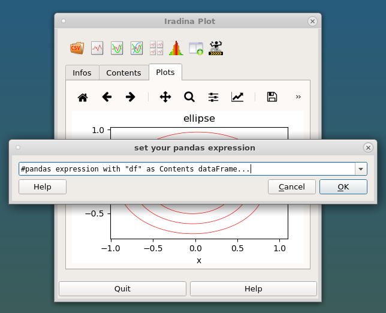
Scrolling, there are some examples of PANDAS dataframe expressions, (read the documentation, sometimes it is not trivial).
{kind=link}
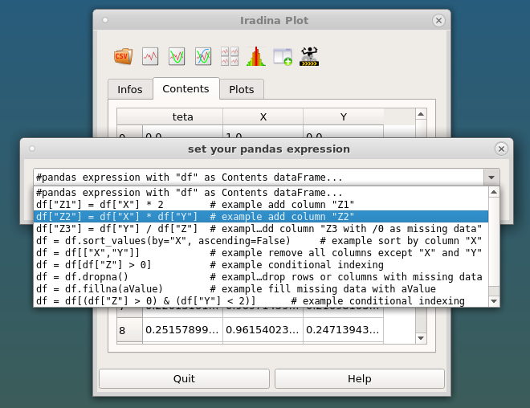
Users have to type their own expression, and confirm (OK). Do not worry, in case of error(s) in expression, an error dialog box appears.
{kind=link}
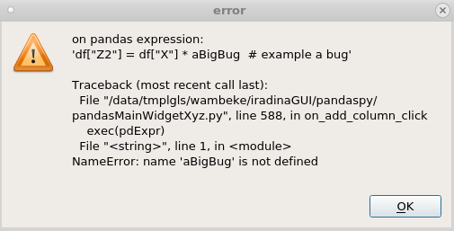
Example of user plot¶
When selecting, for example, theses two columns from ellipse: (X, Z2=X*Y), and Clicking on button 2 of Plot toolbar widget.
Warning
Sometimes, users have to make a multiple-selection of expected number of colums in Contents tab widget before plot actions. The order of multiple-selection is significant.
{kind=link}
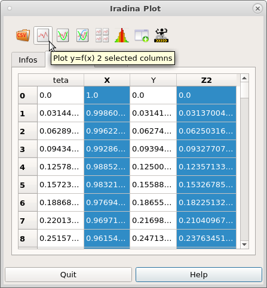
User get this plot
{kind=link}
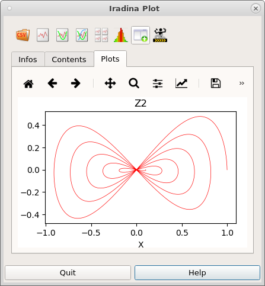